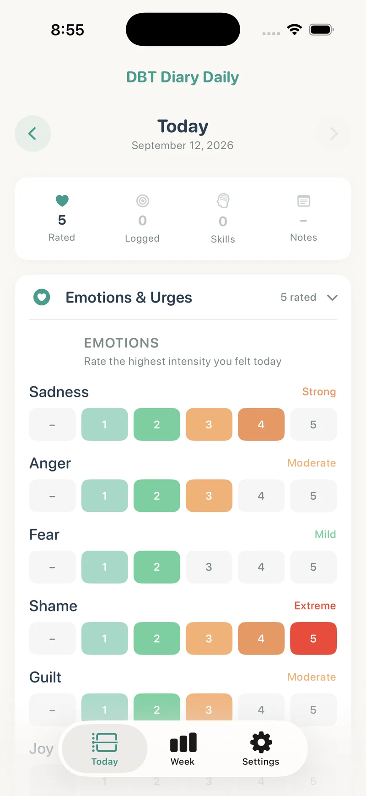
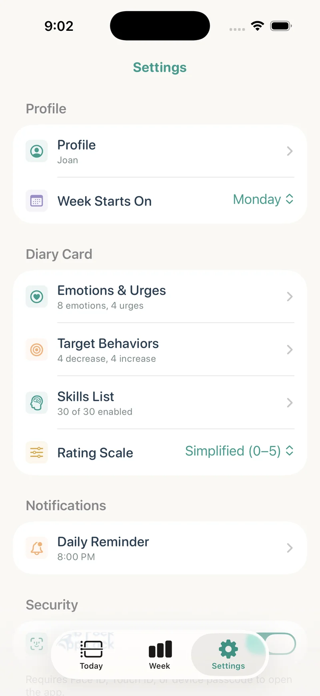

DBT mood and emotion tracker · iPhone & iPad
A little less
guessing back.
Record emotions and urges as part of your daily DBT diary card, then look back at the week with your therapist.
Free download. Full access through a weekly subscription or lifetime purchase.

Record intensity, not just an overall mood
Different feelings can show up on the same day. Record emotions and urges individually rather than reducing the day to a single mood score. The screenshots show the app’s simplified 0–5 rating option.
Use definitions that fit your treatment plan
Your own diary card may use different ratings or ask about a particular point in the day. Agree on the meaning of each scale with your therapist and check the app’s available settings before switching formats.
Use your own labels
Customize emotion and urge labels to match the information you want to record. Add a note about the situation when a number alone will not give you enough context later.
Review the weekly trends
Weekly charts display the ratings you entered alongside skill and behavior summaries. They help organize your record for discussion. They do not establish a diagnosis, treatment result, or cause-and-effect relationship.
Choose when to share
Diary entries stay on your iPhone or iPad. Enable the optional app lock and export a PDF only when you decide to share. Your therapist does not receive live updates.

Explore the rest of your diary card
This is a self-tracking tool, not therapy or crisis monitoring. Use it alongside the guidance of your qualified provider.
Your next check-in
Bring your week into focus.
Record what happened. Keep the context. Share a PDF when you choose.
Download on the App StoreiPhone & iPad · iOS / iPadOS 17 or later · Free download with paid full access